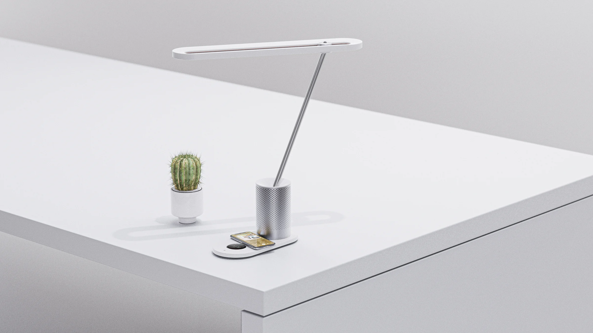
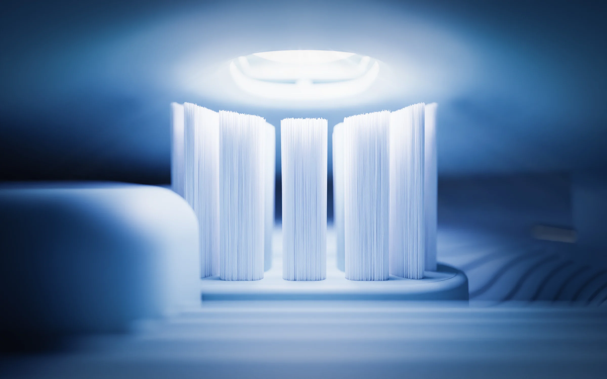
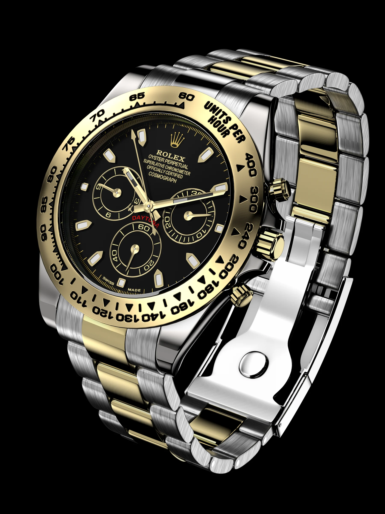
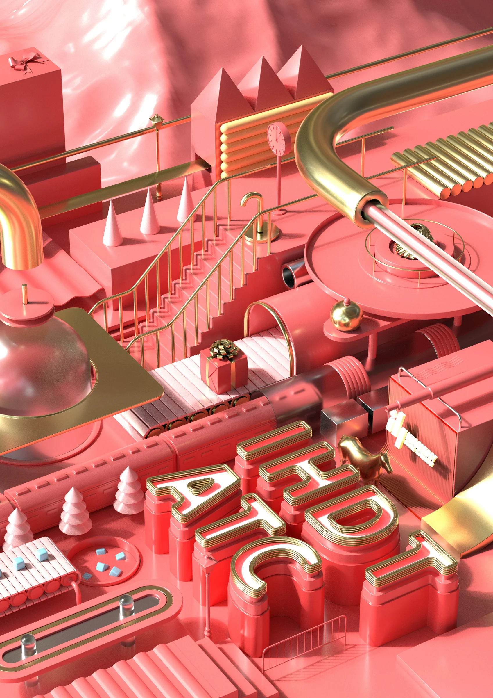

3D Render / Product Visual / Motion
RENDER
WORKS
渲染项目
以 C4D 产品表现为核心，覆盖产品建模、材质灯光、场景搭建、动态短片和电商视觉出图。页面保留原渲染作品的干净质感，用作品集统一的深灰蓝、奶白、粉色和科技蓝组织观看节奏。

Product system
Clean object render
Detail material01 / Motion Rendering
动态渲染
用短视频呈现产品转场、结构运动与灯光变化，保留渲染镜头的节奏感，同时控制页面加载负担。

02 / Product Rendering
产品渲染
以电动牙刷、手表、首饰、家电和美妆产品为主要对象，突出材质控制、白场层次、细节特写和电商视觉效率。
03 / Scene & Object Study
场景与物件
通过台灯、桌面、室内家具和游戏手柄等对象练习结构比例、摄影机角度和空间层次。
04 / Material Experiments
材质实验
把软糖、巧克力、石雕、科幻场景等不同材料放入同一观看系统，展示质感控制和风格延展能力。